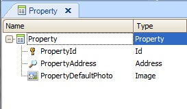
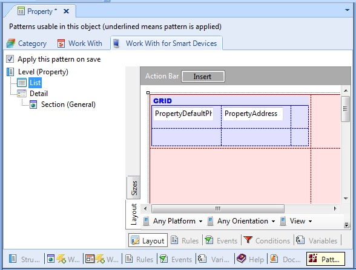
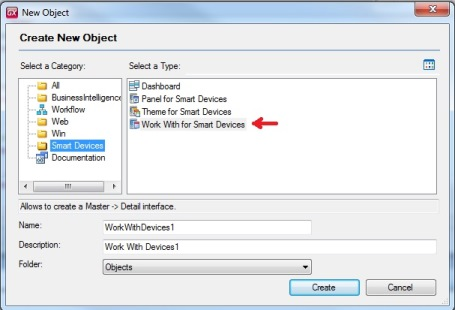

Supposing a Property Transaction with the following attributes:

Apply the Work With Pattern for Smart Devices to the Transaction as follows:

Upon applying the Work With for Smart Devices pattern, the following properties in the transaction change:
•Business Component = True
•Expose as Web Service = True
•Web Services Protocol = ReST Protocol
The UI pattern is applied for defining data lists, actions, etc.
Also, the Smart Devices generator is added as secondary generator to the environment, having selected by default the property Generate Android=True, with the possibility of changing this depending on the device (Apple).
Following F5 and Build, a part that goes in the server (webapi) is generated, in addition to a part that is run on the client (taking data from the webapi for execution).
Note: When you Save As a Transaction, the action only creates a new Transaction object, but not the applied pattern instance. The Save As action creates a default pattern instance for the new Transaction (the layouts in list, detail and all property used in the original Transaction is not saved). If you want to keep all the information in the instance, you must do a Save As for the Wor With Smart Devices instance.
Strictly speaking, applying pattern as we saw here will create automatically an object of the type "Work With for Smart Devices". This means the developer may create its own "Work With for Smart Devices" objects, not related to any Transaction:

See also